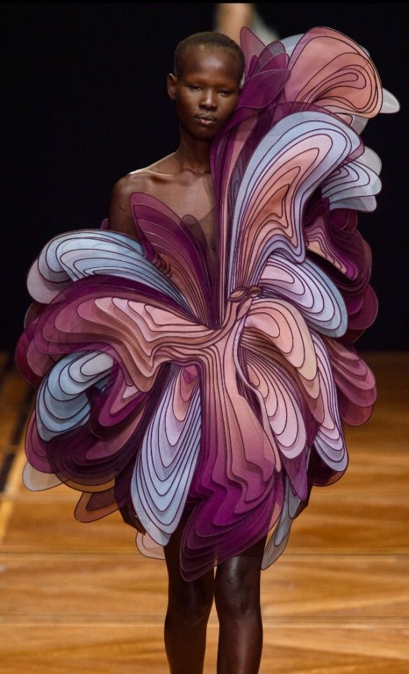
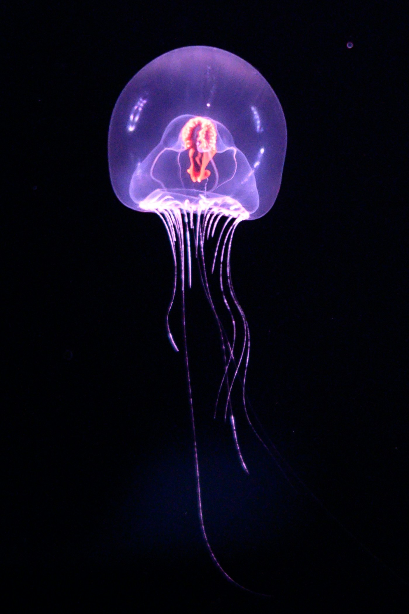
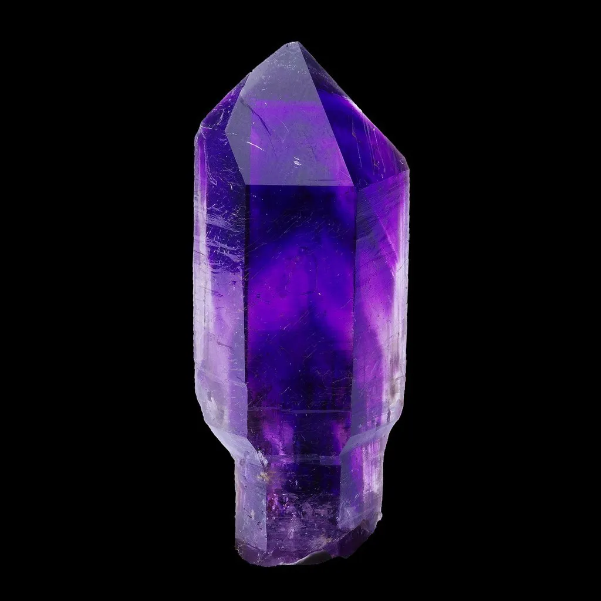
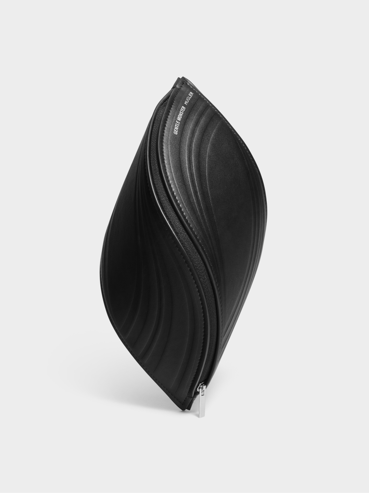
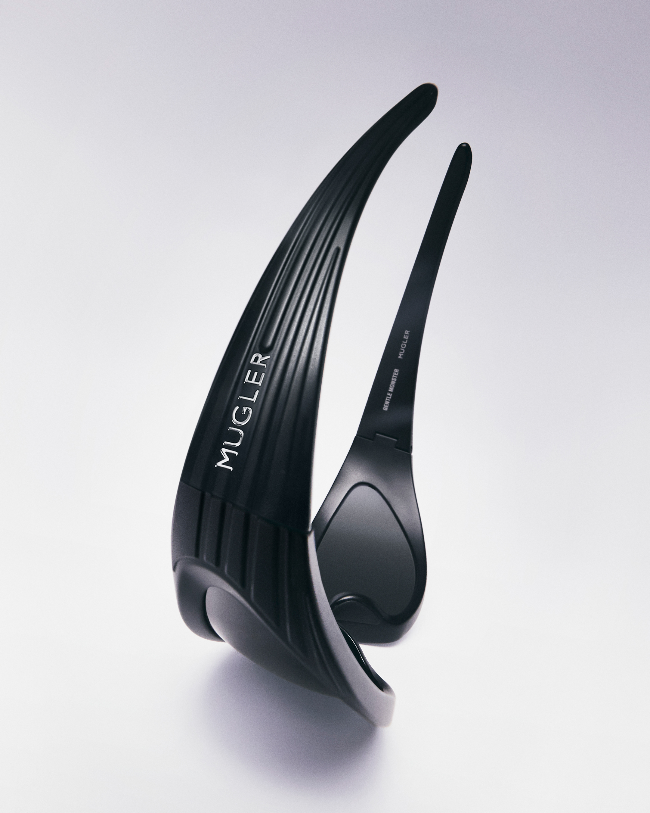
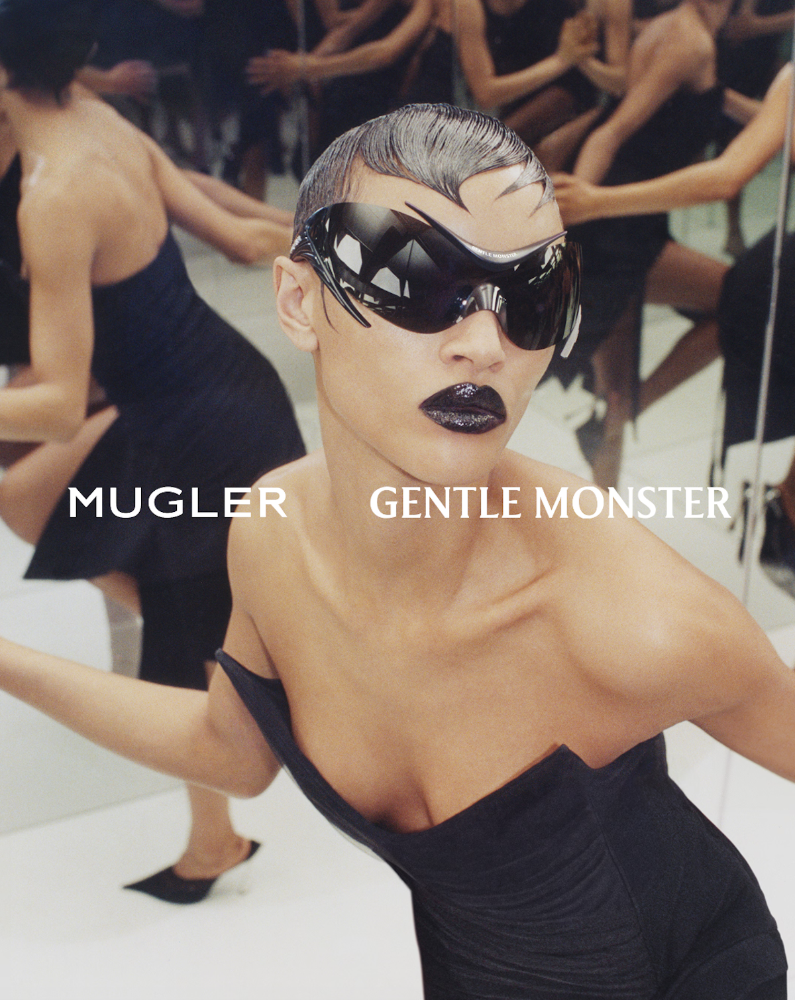
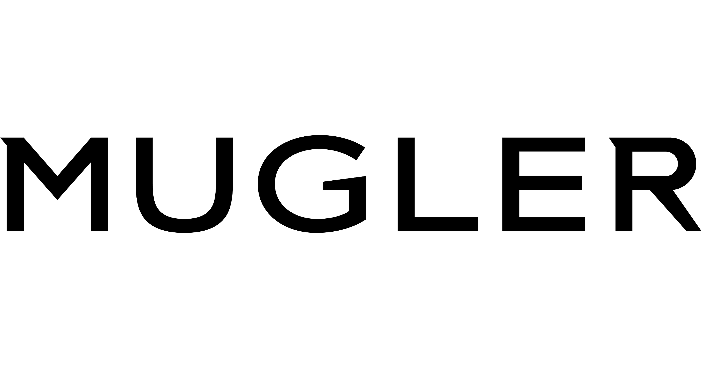
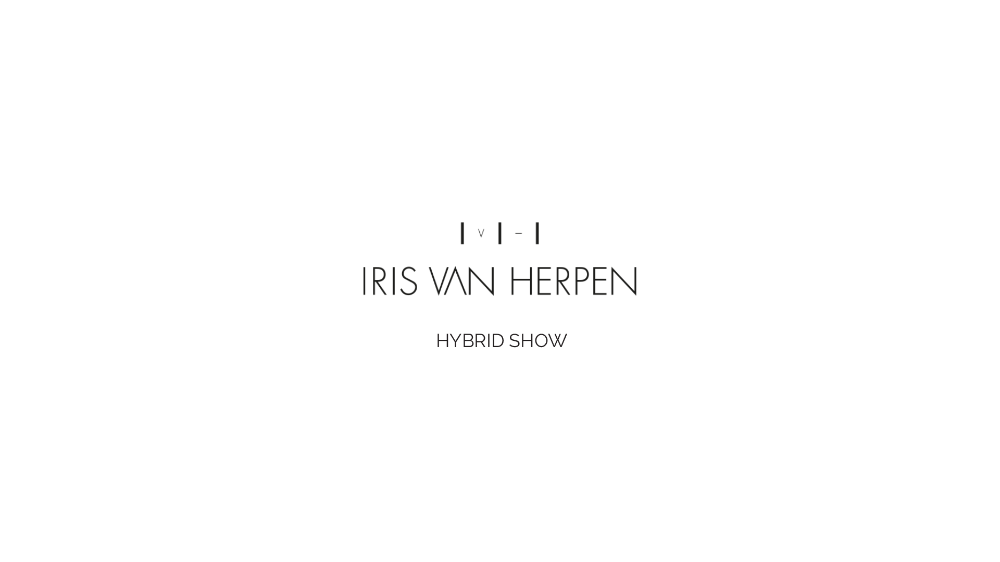
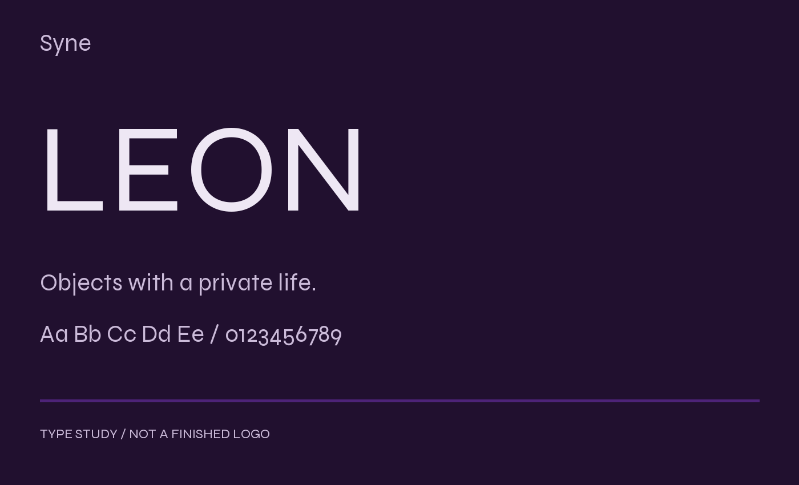

← All three worldsLEON / MOODBOARD 2 / 8 VISUAL REFERENCES
Moodboard 2
Engineered Biosphere & Organic Futurism
Grown, then precisely engineered.
A world of membranes, ribs, repetition and living systems. Purple appears as translucent matter suspended in black. The tension is between an organism and a precision-made object.
BLACK
#09070C
AUBERGINE
#21102F
DEEP PURPLE
#351344
AMETHYST
#4D2378

Form / materialIris van Herpen — Spring 2019 couture
Runway image: ImaxTree, via Go Fug Yourself. Purple petal-like layers suggest a balance of thin edges, density and negative space.
Source & credits ↗
Natural referencePurple jellyfish — Zetong Li
Study luminous edges against black and a seemingly weightless structure. Translate into lighting and translucency rather than a literal jellyfish symbol.
Source & credits ↗Amethyst — natural structure

The crystal connects natural growth with precise planes. Study the transition from rough base to translucent facets for form, surface and lighting references.
Source & credits ↗BRANDING / PACKAGING / ADVERTISINGHow the world becomes a brand.

Packaging / objectGentle Monster × Mugler — sculptural case
The case behaves like an object worth keeping. Repeated ribs and a precise seam connect an organic silhouette to its protective function: a direction for a LEON jewel case.
Source & credits ↗
Branding / product languageGentle Monster × Mugler — Spiral concept
A family of related forms creates recognition beyond the logo. Curvature, surface and negative space can connect a jewel, its packaging and its campaign graphics.
Source & credits ↗
Campaign / editorialMugler × Gentle Monster — campaign
Dark styling and sculptural eyewear bring engineered forms onto a body. Use the tension between skin and a manufactured object for close-up jewelry portraits.
Source & credits ↗Symbols, wordmarks & recognition.

LogoMUGLER — wordmark
Construction reference: a disciplined, assertive wordmark. A LEON direction could juxtapose geometric lettering with organic imagery; preserve clarity at hallmark scale.
Source & credits ↗
LOGO REFERENCEIris van Herpen — abstract initials
A compact system of strokes turns initials into an abstract sign. For LEON, explore the relationship between engineered geometry, open space and a symbol that could be stamped into metal.
Source & credits ↗Montserrat + a voice for this world.
MONTSERRAT / LEON
LEON
Objects with a private life.
Aa Bb Cc Dd Ee / 0123456789
Regular 400Medium 500Semibold 600Bold 700
Montserrat unifies the presentation. Photography, symbols, materials and composition give each world its distinct character. This is a type study, not a finished logo. Font source ↗
COMPLEMENTARY FONT / SYNESyne

An expressive geometric display face with unusual proportions. Its constructed curves complement biological forms; Montserrat keeps the supporting information clear. Explore Syne ↗
TRANSLATION INTO LEONPhotograph jewelry as a specimen with a pulse. Favor macro details, backlit edges, repeated structures and sharply controlled shadows. Let the visual system alternate between a fluid form and a disciplined caption grid.
Avoid generic DNA helices, leaf icons, green eco cues and indiscriminate liquid-chrome effects.